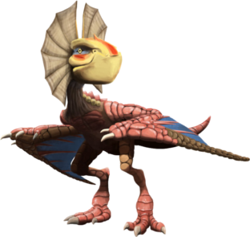
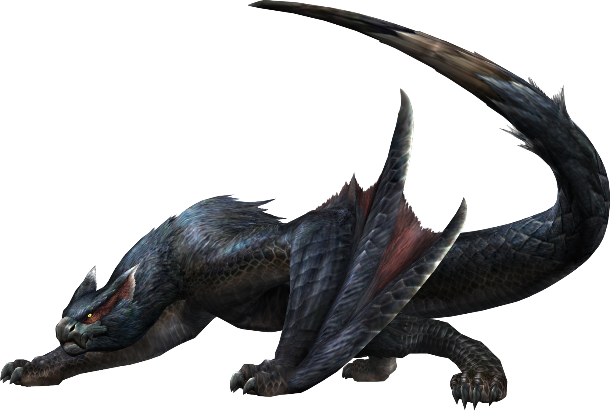
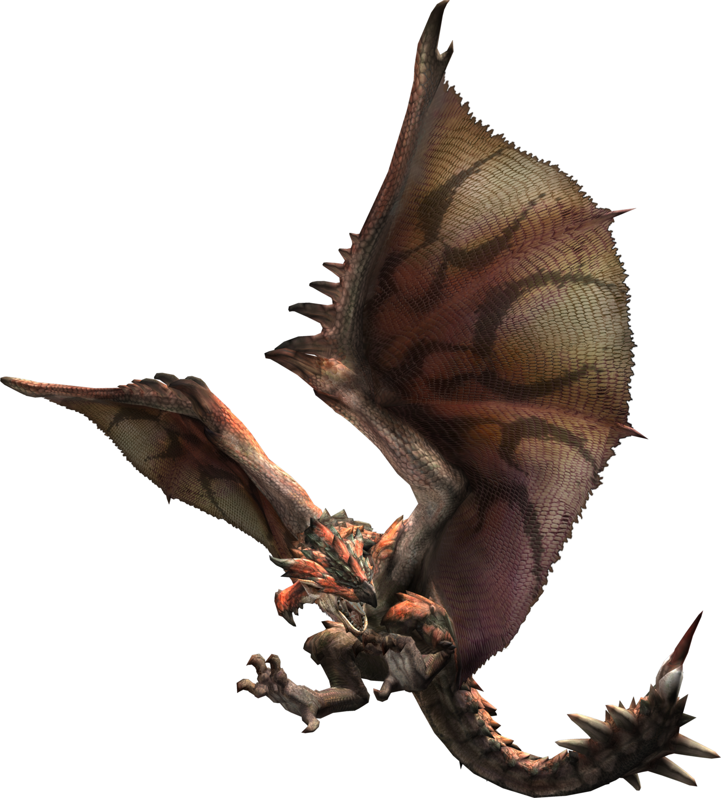
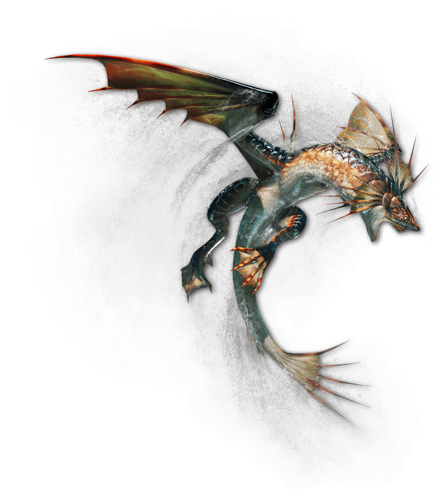
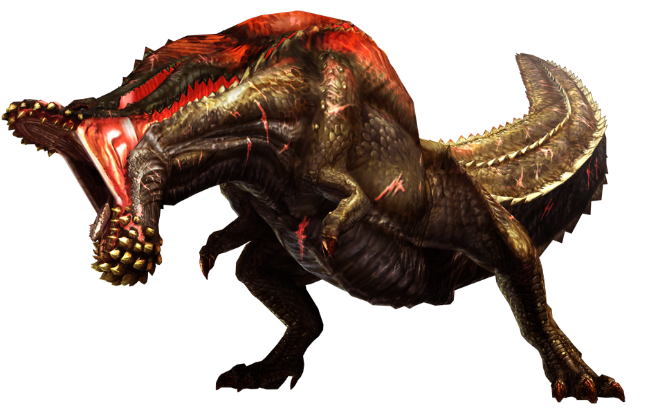
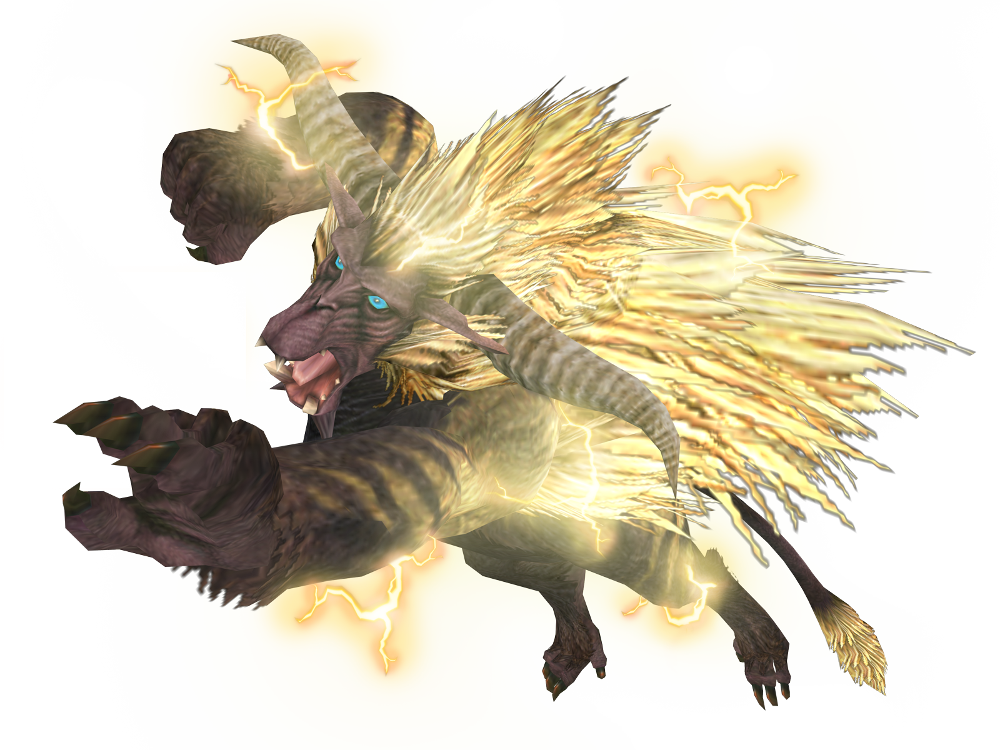
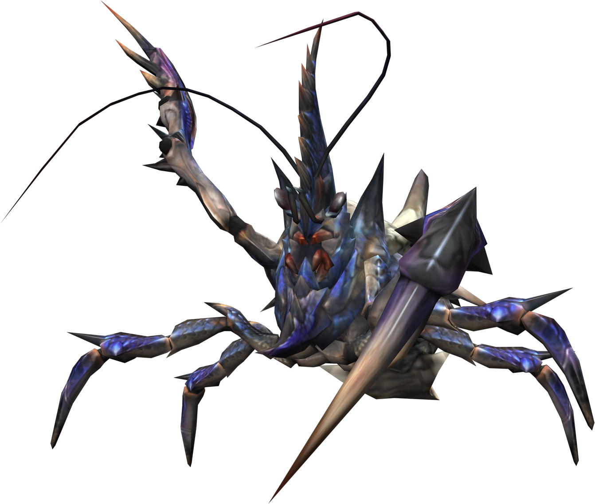
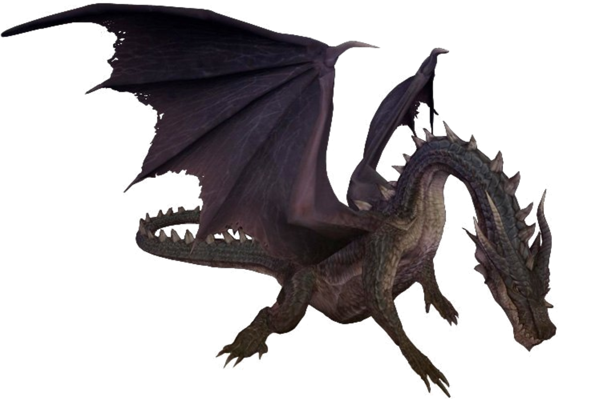
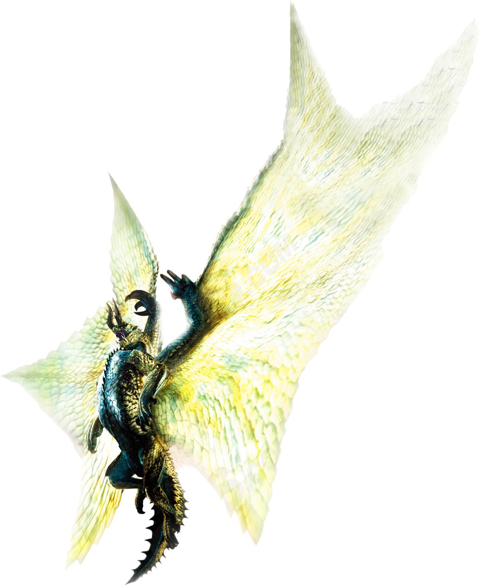

Que son los monstruos o Wyverns?
Los Wyverns por lo general son criaturas con 2 patas traseras para mantenerse de pie, caminar correr, etc,
tambien cuentan con 2 alas para volar y/o caminar dependen de las especies.Los Wyverns se dividen en sub-clase
pero antiguamente todos tenian la capacidad de volar y se asemejaban a la apariencia de un dragon.Hay que aclarar
que el hecho de que las armas tengan un elemento o 2 imbuidos en ellas se debe a que los mosntruos de los cuales
se extraen los materiales para su creacion poseen dicho elemento o estado alterado.
Asi es estas criaturas pueden contar con glandulas venenosas,con neurotoxinas que te paralizan,sedantes
tambien cuentan con un organo llamado "bolsa"o"saco" las cuales almacenan y les permiten escupir en forma de ataque su
elemento correspondiente
Wyverns Pajaro
Este tipo de monstruo se asemeja mucho a la apariencia de las aves,poseen pico,plumas y ponen huevos ademas de tener la habilidad de volar.Hay qye aclarar que hay varios que no tienen estas caracteristicas del todo, por ejemplo hay algunos que en vez de tener plumas tienen escamas y otros carecen de alas o pico pero su reproduccion sigue siendo mediante huevos.Puenden hervivoros,carnivoros o ambos y vienen en tamaños pequeños y medianos.
W-Voladores Cuadrupedos
Entran en la categeoria de Monstruos voladores pero para no confundirlos con otro tipo haremos un punto y aparte.Este tipo de monstruos poseen 2 patas traseras y 2 alas pero esta alas fueron replazandas con el tiempo con otro par de patas delanteras con garras para mejorar su movilidad terrestre y agarre al terreno.En este nuevo par de patas pueden tener o no,un par de alas poco desarrolladas que ya no sirver para volar pero si para planear en el aire.Son de gran tamaño y son carnivoros.
Wyverns Voladores
Entran perfectamente en la descripcion de los que es un Wyvern,cuentan con 2 alas grandes que les permite volar por largos periodos de tiempo ademas de crear fuertes ventiscas de aire y tiene 2 patas. Su apariencia se asemeja a la de los dragones lo cual hace que la gente los confunda con uno.Suelen poseer largas colas y algunas tienen glandulas venenosas capaces de envenenar y otras cuentan puas hechas para herir de gravedad a sus enemigos.
Wyverns Nadadores
Los monstruos nadadores cuentan con 3 aletas y 2 patas por lo que se parecen mucho a un pez.Son criaturas marinas pero tambien habitan en los desiertos,asi es,nadan en la arena como lo hacen en el agua.Se cree que antiguamente eran wyverns Voladores que debido a la competencia por los recursos y habitad con otros monstruos de mayor poder tuvieron que cambiar de ecosistema y adaptarse al mar,lo que causo que sus 2 alas y cola se convirtieran en aletas,esto se dice ya que en la forma de su cuerpo se parecen a los Wyverns Voladores.
Wyverns Brutos
Son monstruos los cuales tienen 4 patas,2 delanteras y 2 traseras,estas ultimas estando muy desarrolladas en comparacion a las del frente que no suelen servir para nada,tambien cuentan con una cola que normalmente sirve para mantener su balance,pero tambien sirve para atacar. Hay un monstruo unico que si ha desarrollado su patas delanteras para atacar de forma contudente el cual es conocido como Brachidios.Tambien se acarcterizan por tener una gran mandibula en comparacion al craneo,dependiendo de la especie la pueden usar para engullir aplastar y desgarrar a sus presas.Pueden ser tanto hervivoros como carnivoros y suelen venir en tamaños de grandes.
Pelagus
Monstruos con la apariencia de bestias,desde primates hasta osos, se caracterizan por tener un pelaje muy pronunciado garras y y colmillos afilados,suelen ser muy peligrosos ya que en la mayoria de los casos independientemente de la especie son muy territoriales y destructivos, algunos son lo suficientemente fuertes como para hacerle frente a los de categoria de Dragon Anciano.Vienen en tamaños pequeños(solo uno),medianos,grandes y muy grandes y debido a la cantidad que abarca esta categoria,podriamos decir que unos son hervivoros otros carnivoros y otros omnivoros.
Caparaceon
Tienen muchas caracteristicas de los crustaceos, mas en especifico de los cangrejos, Cuentan con pinzas muy potentes que usan para escavar debajo de la tierra,atacar de forma contundente a sus enemigos y cubrirse de los ataques frontales que pueda recibir. Cavan bajo tierra para encontrar un caracol o craneo de "Monoblos" para cubrir la parte de atras de su cuervo.Son hervivoros y vienen en tamaños pequeños y grandes.
Dragones Ancianos
Estos son los unicos y verdaderos dragones de la saga(hay algunos que no lo parecen). Son criaturas que como lo dice su nombre son muy longevas y muy inteligentes de hecho antes se podian comunicar con los humanos, son cuadrupedos y tienen 2 alas muy desarrolladas,algunas te pueden hacer perder la estabilidad y hacerte caer por la inmensa presion que generan en el aire.La mayoria tambien cuentan con cuernos que se especula les permite controlar y regular cantidad de "Elemento Dragon"o"Draco" que hay en su cuerpos.
Otros/no identificado
Son monstruos que pueden tener alguna caracteristica de las anteriores categorias pero no terminan de encajar en ellos o son desconocidos todavia y han habido pocos avistamientos, en este caso se espera a que haya informacion mas contudente del mosntruo para colocar al monstruo en la categoria indicada de acuerdo a su fisiologia,dieta,entre otros.
Aqui un ejemplar de cada tipo
Yian Kut-Kut
El Yian Kut-Kut es un monstruo con una apariencia no muy intimidante se puede convertir en tu peor enemigo si lo molestas,cuenta con el Elemento Fuego, solo puede escupir bolas de fuego,sus embestidas y picotazos suelen ser su arma principal,aunque tambien puede dar coletazos girando sobre su propio eje.
| Debilidades | Locaciones |
|---|---|
| Hielo | Selvas y cuevas |
| Agua | Montañas |
Nargacuga
Gran bestia de pelaje negro asabache que le permite ocultarse en la noche,lo unico visible en esta situacion serian sus ojos rojos pero una vez que los vez probablemente ya sea demasiado tarde.Cuentan con hojas muy afiladas en su alas que usa para atacar a su objetivo,son tan duras como el acero y muy densas.Tambien cuenta con una cola muy flexible y tiene puas retractiles con la que azota el suelo para hacer daño Fatal a sus enemigos.
| Debilidades | Locaciones |
|---|---|
| Fuego | Selvas,Llanos |
| Trueno | Boques |
Rathalos
Con sus enormes alas se la pasa gran parte de su vida en los aires,claro cuando no esta comiendo o durmiendo,posee unas garras muy afiladas las cuales tienen glandulas venenosas que dependiendo del tamaño de la presa,si esta no supera el veneno puede morir dentro de 1 a 5 minutos.Tambien conocido como el Rey de los cielos, es capaz de tumbar a otros monstruos alados con sus bolas de fuego.Su cola con puas no sera su principal ataque peero debes tener cuidado.
| Debilidades | Locaciones |
|---|---|
| Hielo | Montañas y Selvas |
| Agua | Volcanes y Pantanos |
| Trueno | |
| Draco |
Plesioth
Criatura marina con apariencia de pez,es capaz de disparar un cañon de agua a presion cuando esta en el agua,con su aletas se mueve rapidamente por las zonas con agua, y increiblemente por la tierra ya que se deslizas en esta,claro no esta tan efectivo pero es increible.Si bien se puede deslizar en la tierra puede caminar y correr en la tierra sin muchos problemas.Se debe aclarar que no suele importar el habitad siempre y cuando haya agua, podra vivir ahi ya sea un desierto o un pantano,claro obviando esos lugares que no tienen o que no lo permiten,vease las zonas volcanicas y las nevadas.
| Debilidades | Locaciones |
|---|---|
| Hielo | Cuevas de agua(En el desierto) |
| Agua | Playas y lagos |
Deviljo
No posee un habitad en especifico,los mueve su insaciable apetito que solo es aliviado un par de horas antes de querer volver a comer,es considerado un destructor de ecosistemas ya que al llegar a uno devorara cualquier cosa que se encuentre siempre y cuando no haya otro monstruos que se le interponga.no se sabe si esto se debe a como metaboliza las cosas y si esto guarda relacion con su musculatura excesivamente desarrollada, este monstruos cuenta con dos patas traseras demasiado fuertes capaces de causar micro temblores si pisa muy fuerte, ademas de sus patas si mandibula le han crecido puas,como si su mordida no fuese ya mortal.Cuando este monstruo se molesta y entra en "Estado de Furia" todos sus musculos se hinchan lo cual hace que heridas antiguas que hacha sufrido se vuelvan abrir lo que le causa dolor y estres a la bestia.Durante este estado puede expulsar un aliento de Elemento Draco capaz de destruir cualquier cosa que se le ponga en frente.
| Debilidades | Locaciones |
|---|---|
| Trueno | Casi cualquier lugar |
| Draco |
Rajang
Criatura primate con unos musculos tan fuertes que puedeb arrancar grandes pedazos de tierra del suelo para lanzarlos y causar desastres,es altamente temperalmental y territorial,los golpes que lanza son altamentedestructivos y peligrosos,cuando se enfurece el color de su pelo cambia de color a uno dorado y sus puños se endurecen,tambien es capaz de lanzar bolas y rayos electricos,se dice que si le rompen la cola pierden la capacidad de controlar el elemento trueno casi del todo y ya no les cambiara de color su pelo.
| Debilidades | Locaciones |
|---|---|
| Hielo | desiertos |
| Volcanes | |
| Montañas nevadas |
Caparaceon
cangrejo con pinzas muy afiladas con las que se puede aferrar a los techos de las cuevas en las que habitad, ya sea para caer bruscamente en sus presas o disparar un chorro de agua a presion para dañar a los alrededores,cuando se enoja aumenta drasticamente su velocidad, tira espuma por la boca y despliega si pinzas como si fueran chuchillas ocultas,te cortara en pedazitos si no eres bueno esquivando.
| Debilidades | Locaciones |
|---|---|
| Hielo | Cuevas(Zonas costeras) |
| Trueno | Cuevas(Pantanos) |
Fatalys
El Dragon Negro, fue unos de los participes de la Gran guerra ocurrida hace ya 300 años, se dice que su presencia hizo temblar el campo de batalla, tambien fue uno de los pocos dragones que pudieron sobrebivir luego de la batalla contra los humanos los cuales podian hacerle frente a criaturas casi tan fuerte como esta ya que las cazaban y convertian en armas,armaduras y herramientas para la guerra. Esta persecusion provoco la furia de estos antinguos entes.El Fatalys es un dragon negro de gran tamaño el cual tiene a sus disposicion el Elemento Dragon y fuego. Este Dragon Anciano suele habitar en el castillo de schrade(se dice que lo esta custodiando). Este castillo fue habitado por una familia muy importante pero durante la Gran guerra fue atacado por el fatalys, no sobrevivio nadie, lo mas probable es que proteja esta zona debido a que tiene una arma antigua pero a dia de no se ha podido replicar ya que la tecnologia es demasiado avanzada para estos tiempos que es capaz de hacerle un daño contundente a los Dragones Ancianos.
| Debilidades | Locaciones |
|---|---|
| Dragon | Castillo de Schrade |
| Fuego |
Shagaru Magala
Estamos discutiendo si ponerlo en la categoria de Dragon Anciano por lo que se quedar aqui durante un tiempo, cuenta con 6 patas, 4 para caminar y 2 pegadas a las a alas.cuenta con cuernos que si bien se crreia que le serviria para controlar el Elemento Dragon pero este no cuenta con el.En vez cuenta con la capacidad de contagiar a los individuos cercanos(tanto Cazadores como Monstruos) de un virus que no se sabe si se propaga por el aire o por contacto del monstruo causando distintos efectos dependiendo de quien fue afectaqdo.Si el afectado fue un humano este tendra un periodo de incubacion del virus,si lo supera sus capacidades fisicas se ven aumentadas por un periodo de tiempo mientras su cuerpo elimina los restos del virus,si no la supera se debilitara hasta que su sistema elimine el mismo.En monstruos pueden pasar 2 cosas,la primera en la que despues de estar mucho tiempo contagiados sin la capacidad de eliminar el virus, entraran en un estado de colera el cual aumenta sus capacidades pero a la larga los terminara matando, y el segundo caso en el que simplemente mueren.El Shagaru Magala es conciente del viruz que posee y tambien a quien puede contagiar, y los Dragones Ancianos no estan en la lista.Algo que hace unico a este monstruo es que al contagiar a los monstruos puede que este sea asintomtico al principio pero despues presentar sintomas, esto es asi debido a que ha estado incubando el virus y a su vez desarrollando la cria de Shagaru magala en su interior (Gore Magala) el cual al salir de su huesped lo matara al instante,si es algo asi como un viruz parasitario,se dice que esto no afecta a los humanos ni a los dragones ancianos debido al nivel intelecual,el hecho de ser especies distintas y algo que tambien destacan los investigadores que depende de la fuerza de voluntad del individuo.
| Debilidades | Locaciones |
|---|---|
| Dragon | Desconocidos |
| Fuego |